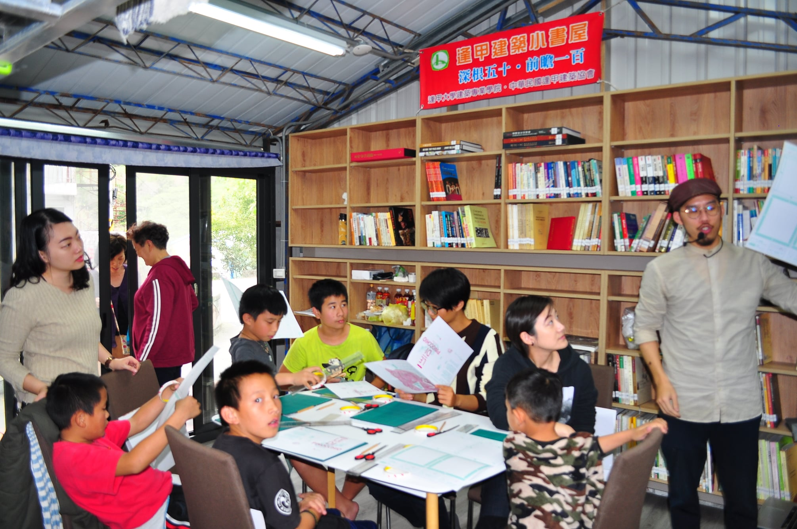
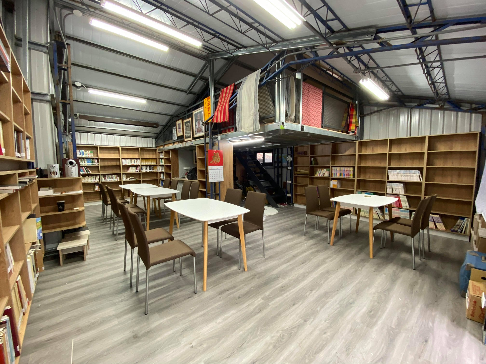

立體書製作活動紀錄
#20201227立體書製作活動#
立體書製作活動順利完成，部落親子約15-18人參與。感謝半隻羊立體書實驗工作室提供材料與教學，奇美博物館、 暨南大學歷史系、科博獸醫登山社、走走家具與個別等人力協助，親愛國小詹校長與松林部落族人熱心參與指導。 以及，半隻羊、走走家具與普羅相機禮品文具贊助。過程順利，小朋友與親子收穫滿滿。感謝。
#20201224書桌書椅到位#
哇，最後一塊拼圖:嶄新桌椅到位， 感謝綠屋家居徐樹潭總經理全力贊助。 搭配陳文龍副總的欣閣書櫃，如虎添翼。 全新裝備，在老倉庫中新生，準備展翅。 星期天第一個活動來囉:半隻羊立體書。
#20201227立體書製作#
歡迎松林部落與附近部落小朋友，松林書屋跟著半隻羊裡體書玩立體書!! 小書屋容量少，名額有限，預計接收15-20人，部落先報名者優先保留喔! #家長也可以一起來喔。